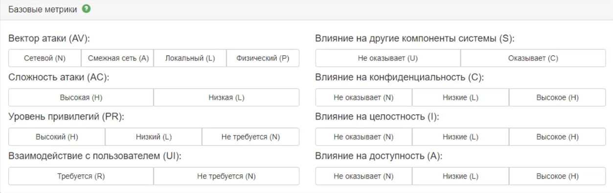

CVE - база данных общеизвестных уязвимостей ИБ. Каждой
уязвимости присваивается ID номер вида CVE-год-номер, описание и ключевые параметры уязвимости,
такие как:
Номер уязвимости, например CVE-2019-0708
Шкала критичности (метрика), 9.8 CRITICAL
Вектор, CVSS:3.0/AV:N/AC:L/PR:N/UI:N/S:U/C:H/I:H/A:H (нужен для быстрого
понимания как эта уязвимость работает)
Временные метрики - вносят в общую оценку поправку на полноту
имеющейся информации об уязвимости, зрелость эксплуатирующего кода и доступность исправлений.
Доступность средств эксплуатации (E), Доступность средств устранение
(RL), Степень доверия к информации об уязвимости (RC)
💡
Контекстные метрики - при помощи контекстных метрик эксперты по
безопасности могут внести в результирующую оценку поправки с учетом характеристик
информационной среды
Актуальные уязвимости для инфраструктуры Windows
Zerologon
Представляет собой ошибку в реализации протокола шифрования
AES-CFB8 в Netlogon Remote Protocol (MS-NRPC)
Позволяет неаутентифицированному атакующему
удаленному получить права администратора домена
Полная компроментация домена
Критичность 10/10
Имеет идентификатор CVE-2020-1472
В сети в открытом доступе присутствуют
PoC-эксплойты для уязвимости
SMBGhost
Уязвимость представляет собой переполнение
буфера на серверах Microsoft SMBv3
Проблема позволяет неавторизированному атакующему удаленно
выполнить код на целевом сервере или клиенте
Имеет идентификатор CVE-2020-0796
Эксплуатация уязвимости открывает системы для атак с
потенциалом червя
В сети в открытом доступе присутствуют
PoC-эксплойты для уязвимости
Proxylogon
Эта уязвимость позволяется внешнему атакующему обойти
механизм аутентификации в MS Exchange (почтовый сервис) и выдать себя за любого
пользователя
Уязвимости позволяют злоумышленнику обойти этап
аутентификации, получить права администратора, установить вредоносное ПО и выполнять
произвольные команды
Атака представляет собой цепочку уязвимостей
CVE-2021-26855, 26858, 27065, 26857
Первоначальный доступ осуществляется с помощью
CVE-2021-26855
Тип уязвимости SSRF (подделка запросов со стороны
сервера)
PrintNightmare
Уязвимость в диспетчере печати
Имеет идентификаторы CVE-2021-1675 (эксплуатация
только локально) и CVE-2021-34527 (удаленно)
Ошибка в коде приводит к недостаточной валидации ввода в ходе
добавления нового принтера, в результате появляется возможность загрузить в систему
вредоносный DLL-файл. Повторная попытка добавить принтер позволяет обратится к
загруженному файлу, который запустится с системными привилегиями
Нестареющие уязвимости (почти с рождения Windows)
Path-the-hash
Позволяет атакующему авторизоваться на
удаленном сервере, вход на который осуществляется с использованием протоколов NTLM или LM. Для
такой аутентификации используется не пароль, а хеш пароля. Все из-за того, что хеши
паролей передаются без соли, т.е. остаются неизменными от сессии к сессии
Local Loop Multicast Name
Resolution позволяет компьютерам выполнять разрешение имен хостов в локальной сети.
Основная проблема протокола в том, что запрос разрешения имен рассылается с помощью мультикаста
(многоадресно), что означает, что клиент неявно доверяет всем, кому ответит
NetBIOS (протокол)
NBNS нужен для обнаружения компьютеров в сети,
построенной на базе TCP/IP. Netbios использует для службы имен (NetBIOS-NS) порт
137, для службы дейтаграмм (NetBIOS-DGM) - порт 138, а для сессий
(NetBIOS-SSN) - порт 139.
Злоумышленник может подменить данные, из-за
того что они отсылаются широковещательно
WPAD (Использование браузера IE)
Эксплуатация контроллера домена на примере Zerologon
{kind=link}
{kind=link}
{kind=link}
{kind=link}
{kind=link}
{kind=link}


{kind=link}
{kind=link}
{kind=link}